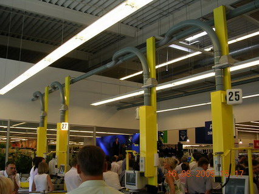
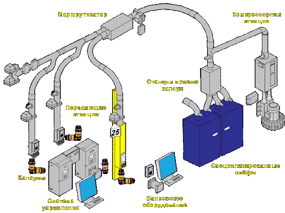
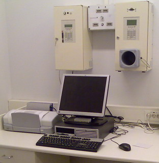
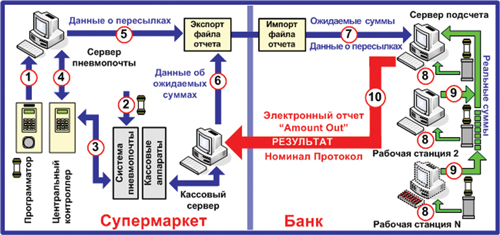
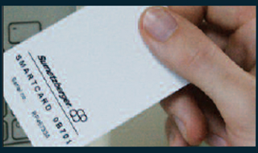
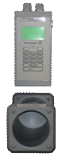

-
Область применения
Типы систем
Типы станций
Общее оборудование
Аксессуары
Транспортировочные средства
Программное обеспечение
-
Область применения
Типы систем
Регистраторы клиентов
Цифровые дисплеи
Клавиатуры вызова
Аксессуары
Программное обеспечение

ТИПЫ СИСТЕМ:
1. Автоматизированная система обработки наличных денег SSCHS MP10.000
2. Система передачи наличных денег КА20.000 NW110
3. Система передачи наличных денег CTCS NW110
4. Фармацевтическая система BA5020 NW110
5. Фармацевтическая система BA5032E NW160
6. Фармацевтическая система BA5035E NW160
7. Система "точка-точка" SB1001 (NW63-110)
8. Административная система MP10.000 NW110
9. Промышленная система для пересылки горячих и холодных вложений NW80
1. АВТОМАТИЗИРОВАННАЯ СИСТЕМА ОБРАБОТКИ НАЛИЧНЫХ ДЕНЕГ "SSCHS MP10.000"
Система SSCHS MP10.000 предназначена для передачи наличных денег с рабочего места кассира в сейф и применяется главным образом в крупных супермаркетах с большим оборотом наличных денег и при использовании большого количества кассовых стоек. Это наиболее безопасная и оперативная система обработки наличных денег.

Рис.1 Кассовая зона супермаркета с использованием системы SSCHS MP10.000
Система оборудуется передающими станциями "SSCHS MP10.000", имеющими только один адрес получателя - специализированный сейф.

Рис.2 Упрощенная схема системы SSCHS MP10.000
Основное отличие данной системы от подобных систем в том, что при их использовании в полной конфигурации отсутствует необходимость пересчета кассиром наличных денег перед их отправкой в сейф. Это позволяет не закрывать кассу для смены кассиров на период подсчета денег при большом количестве ожидающих клиентов. Весь процесс отправки денег в сейф занимает около одной минуты.
В таких системах используются "интеллектуальные" капсулы "Flip-top-110".

Рис.3 Рабочее место для регистрации капсул.

Рис.4 Алгоритм работы системы SSCHS MP10.000
Каждый из кассиров супермаркета имеет индивидуальную магнитную карту, персональный номер (ID), который прописан в системном файле системы пневмопочты, на кассовом сервере, а также на индивидуальной магнитной карте кассира.

Рабочий день кассира начинается с регистрации капсул в системе с использованием индивидуальной магнитной карты, сервера управления системой и устройства программирования капсул. В результате регистрации на чипах капсул записывается информация об ID кассира, дате и времени регистрации, номере капсулы, номере филиала, а также о цифровом номере одноразовой пластиковой пломбы, которой будет пломбироваться капсула с деньгами перед ее отправкой. Регистрационные данные каждой из капсул сохраняются в базе данных сервера управления системой пневмопочты (Этап 1). После этого кассир отправляется на свое рабочее место в кассовую зону супермаркета.
Кроме того, каждый кассир проходит авторизацию на кассовом аппарате и регистрируется на кассовом сервере.
Капсулы с наличной выручкой отправляются из кассовой зоны супермаркета при помощи системы пневмопочты в главную кассовую комнату, либо непосредственно в специализированный сейф.
При накоплении определенного объема наличной выручки кассир принимает решение об отправке капсул в сейф и закладывает деньги в капсулу, затем пломбирует капсулу одноразовой пластиковой пломбой. Доступ к содержимому такой капсулы можно получить, только сломав пломбу. При попытке отправки капсулы система пневмопочты запрашивает код доступа кассира. Для отправки капсул кассир использует свою индивидуальную магнитную карту. Система разрешает отправку капсулы только при совпадении кода капсулы и магнитной карты. После успешной идентификации кассира, система пневмопочты осуществляет пересылку капсулы. После отправки такой капсулы в сейф факт ее отправки и все индивидуальные данные о кассире, отправившем капсулу в сейф, регистрируются в информационной базе программы "Tubemail" (Этапы 2-4). Процесс подготовки денег к отправке и отправка капсулы занимает не более одной минуты!!!
Кроме того, количество капсул, попавших в сейф подсчитыается счетчиком капсул.
С момента пломбирования и отправки капсулы в сейф кассир несет полную ответственность за содержимое отправленной капсулы. В процессе работы кассира информационный сервер супермаркета ведет учет полученных от торговли денег для каждого кассира в соответствии с его ID.
По окончании рабочего дня в супермаркете и завершении отправок всех капсул, старший кассир супермаркета готовит электронную версию суточного кассового отчета с использованием сервера управления системой пневмопочты и специализированного программного обеспечения "CashCare".
В отчет включаются сведения о регистрации и отправке капсул, поступающие с сервера управления системой пневмопочты, и ожидаемые суммы для каждого кассира, полученные с кассового сервера (Этапы 5-6). Электронный отчет передается в банк.
По прибытии инкассации осуществляется вскрытие сейфов и изъятие сумок с капсулами. Сумки, при изъятии их из сейфов, автоматически захлопываются. Причём, ключи от этих сумок находятся только в обслуживающем банке.
После доставки в банк сумок с капсулами и получения отчета из супермаркета производится импортирование данных на сервер подсчета денег (Этап 7) и кассиры банка начинают подсчет денег, находящихся в капсулах (Этап 8), с использованием программного обеспечения "CashCount" и специализированного оборудования.

Рис.5 Рабочее место кассира в обслуживающем банке

Рис.6 Специализированное оборудование для обработки капсул с деньгами.
Для ввода данных о деньгах кассир банка вставляет капсулу в считыватель и на экране монитора компьютера отображаются регистрационные данные капсулы. При совпадении номера пломбы, указанной в регистрационных данных капсулы, производится ее вскрытие и подсчет денег. Информация вносится в базу данных по номиналам банкнот и по достоинству разменной монеты. Вся информация накапливается на сервере подсчета денег (Этап 9). Таким образом, по каждому из кассиров супермаркета формируется база данных об ожидаемых суммах, реальных суммах, разнице между ожидаемой и реальной сумме, а также данные номинал-протокола для каждой из капсул.
По завершении подсчета денег старший кассир банка готовит электронный отчет о реальных суммах денег, находящихся в каждой из обработанных капсул (отчет Amount out), а также Номинал-Протокол по каждой из обработанных капсул с указанием итоговых сумм и направляет эту информацию в супермаркет (Этап 10).
На этом процесс обработки денег завершается.
Как работает данная система вы можете посмотреть на примере анимированного флеш-фильма. Для просмотра флеш-видео - нажмите на кнопку: